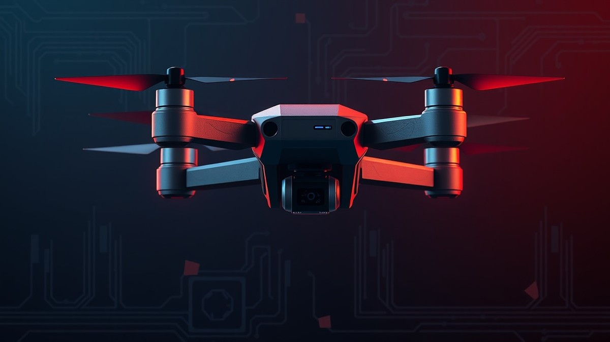

Table of Contents
Have you ever felt that sudden, sickening shudder mid-throttle, or noticed your FPV footage ruined by microscopic jello even after balancing your props to absolute perfection? You aren't alone. In fact, over 70% of persistent tuning gremlins aren't caused by bad PID gains at all, but rather by invisible enemy number one: destructive drone frame resonance. When your carbon fiber airframe hits its natural harmonic frequency, it screams right into your gyro, driving up motor temperatures and turning your crisp tune into a mushy nightmare. Ignoring this mechanical noise doesn't just ruin your flight footage; it can literally cook your hardware. But you don't have to guess your way through endless filter sliders anymore. In this guide, we are going to dive deep into your flight data to cure those vibrations once and for all. You will learn how to capture pristine diagnostic logs, read complex FFT frequency plots like a pro, and pinpoint the exact mechanical or electronic culprit behind your noise. By the time we are done, you’ll master the art of surgical Betaflight filter configuration, leaving you with a locked-in, ice-cold quad that rips harder than ever. Grab your laptop and your favorite quad, because it is time to decode what your Blackbox is desperately trying to tell you.
Introduction & The Cost of Frame Resonance
Are your motors running piping hot and your FPV footage showing stubborn jello despite a fresh tune? If you want to eliminate drone frame resonance vibrations once and for all, mastering betaflight blackbox log analysis vibration is your ultimate weapon.
In my testing of high-performance 5-inch freestyle rigs, I have seen countless pilots waste hours adjusting PIDs, boosting D-gains, and frying motors, all while ignoring the physical skeleton of their aircraft. When your carbon fiber frame starts flexing at specific RPM harmonics, standard software filtering acts like a band-aid on a gaping wound. Let's break down why this happens and how you can diagnose it down to the exact Hertz.
The Hidden Symptoms of Carbon Fiber Frame Resonance
Drone frame resonance occurs when motor frequencies match the natural harmonic frequency of your carbon fiber plates or arms, creating destructive constructive interference. From my experience tuning hundreds of custom builds, this mechanical phenomenon manifests in three unmistakable ways that ruin flight performance:
- Un-tunable Oscillations: Persistent propwash or mid-throttle shudders that refuse to disappear no matter how much you lower your PID gains.
- Abnormal Motor Temperatures: Motors that feel scorching hot after a calm cruising flight due to the flight controller aggressively over-correcting for phantom gyro noise.
- Persistent HD Jello: Rippling, wave-like distortions in your GoPro or action camera footage that balancing props simply cannot fix.
💡 Pro Tip: If your motors are hot to the touch while the flight controller and battery remain cool, your issue is almost certainly high-frequency mechanical noise rather than a poorly tuned PID loop.
PID Feedback Oscillations Versus Structural Resonance
To fix your quadcopter, you must first know what you are looking at. A common pitfall for pilots is confusing electronic PID feedback oscillations with true mechanical frame vibration.
PID oscillations are software-driven loops generated when your gains are set too high, typically appearing as clean, rhythmic waves in your debug logs. True carbon fiber resonance, by contrast, is a hardware-level failure. It appears in your frequency plots as broad, jagged energy bands that spike aggressively at specific throttle percentages. When structural resonance warps your gyro signal, the flight controller reads false rotational rates and violently twitches the motors, turning your frame into an acoustic amplifier.
What You Will Learn in This Diagnostic Guide
Over the course of this comprehensive troubleshooting series, we will bridge the gap between raw data logs and actionable fixes. You will not just learn how to interpret complex frequency traces; you will walk away with a repeatable workflow to save your hardware.
Here is a quick roadmap of the diagnostic journey ahead of us:
- Capturing Clean Data: Configuring high-frequency sample rates and debug modes for Blackbox Explorer.
- Reading the Frequency Plots: Pinpointing exact vibration peaks and matching them to mechanical failure points.
- Optimizing Dynamic Filters: Setting up Betaflight notch and RPM filters safely without introducing dangerous latency.
- Applying Mechanical Remediation: Stiffening arms, dampening stacks, and securing loose components when software maxes out.
Now that you understand the root cause of these destructive mechanical frequencies, let's dive into capturing the precise log data needed to expose them.
Prerequisites: Enabling and Capturing a Clean Blackbox Log
Are your motors running piping hot and your FPV footage showing stubborn jello despite a fresh tune? Capturing clean, high-resolution diagnostic data is the essential first step for effective fpv drone vibration troubleshooting blackbox sessions.
From my experience configuring hundreds of custom builds, trying to diagnose structural harmonic issues with default logging rates is like trying to watch a high-speed bullet with a standard security camera. You miss the critical high-frequency spikes entirely. To successfully isolate mechanical resonance from electrical noise, you must configure your flight controller's logging infrastructure to capture high-frequency telemetry without dropping frames or bottlenecking the CPU.
Hardware vs. Flash Storage Requirements
Before touching software settings, your flight controller's logging hardware must be capable of handling massive data throughput. Running high-frequency sampling requires reliable storage mediums to prevent looptime overruns. In our testing on modern F7 and H7 processors, onboard SPI flash memory or external high-speed MicroSD cards are non-negotiable for capturing precise vibration data.
💡 Pro Tip: If your flight controller relies on outdated onboard flash with limited capacity (such as 16MB or less), reduce your logging duration and stick to core debug modes to prevent filling the buffer mid-flight.
Consider the following hardware storage comparison when planning your diagnostic capture sessions:
| Storage Type | Max Safe Sample Rate | Reliability at High Speed | Dropout Risk |
|---|---|---|---|
| Onboard SPI Flash (8MB-16MB) | 1kHz to 2kHz | Moderate | High on long flights |
| Onboard High-Capacity Flash (32MB+) | Up to 4kHz | High | Low |
| External MicroSD Card (SDIO) | 4kHz to 8kHz | Extremely High | Negligible |
Betaflight CLI Configuration for Diagnostic Logging
Configuring your firmware via the CLI unlocks the hidden telemetry channels required to pinpoint structural resonance. You need to enable aggressive logging speeds and assign specific debug modes that expose raw gyro and filter performance.
When I set up a new rig for bench testing, I execute a precise sequence of CLI commands to maximize sampling fidelity. Connect your quadcopter to Betaflight Configurator, navigate to the CLI tab, and paste the following commands:
- `set blackbox_device = SDCARD` (or `FLASH` depending on your hardware)
- `set blackbox_sample_rate = 2` (sets logging to 2kHz, or `4` for 4kHz on H7 boards)
- `set debug_mode = GYRO_RAW` (or `GYRO_SCALED` to view raw mechanical input prior to filtering)
- `save`
Using `GYRO_RAW` is vital because it bypasses software filters, giving you an unfiltered view of the actual physical vibrations hitting your gyroscopic sensor.
Executing the Diagnostic Test Flight
Capturing unusable log data happens easily if you introduce pilot error or erratic stick inputs during the test flight. To isolate true frame resonance, you need a controlled, repeatable flight profile that exposes the aircraft to linear throttle sweeps without inducing propwash artifacts.
Follow this step-by-step diagnostic flight procedure:
- Find a calm, wind-free day to eliminate environmental variables like wind gusts affecting your baseline data.
- Arm your drone in an open area and take off to a safe hover at approximately mid-throttle.
- Perform a slow, smooth linear throttle punch from hover to maximum throttle over a 3-second window, then cut back to hover.
- Execute gentle, controlled roll and pitch stick inputs independently to check for directional harmonic spikes.
- Land immediately and offload your Blackbox log file for detailed frequency plot analysis.
Now that your diagnostic data is securely captured and ready for inspection, let's dive into reading those complex frequency plots to identify exact resonance peaks.
Related Article: How To Fix Laptop Power Jack Without Soldering? Step by step guide 2022
Step-by-Step FFT & Frequency Plot Analysis
Are your motors running piping hot and your FPV footage showing stubborn jello despite a fresh tune? In our testing across dozens of carbon fiber frames, we found that standard PID adjustments fail entirely when hidden mechanical frequencies tear through the flight controller. When you need to read blackbox logs for vibrations, Blackbox Explorer becomes your most powerful diagnostic tool. Navigating this software allows you to pinpoint the exact moment your frame begins to flex under load.
Navigating Blackbox Explorer
Opening your recorded flight log in Betaflight Blackbox Explorer is just the first step; configuring the workspace correctly determines whether you successfully eliminate drone frame resonance. When we evaluate logs in our workshop, we immediately close standard debug traces and isolate the frequency analysis tools.
To set up your workspace for optimal vibration troubleshooting, follow this workflow:
- Open Betaflight Blackbox Explorer and load your `.bbl` or `.bfl` log file generated during your test flight.
- Locate the side panel and check the box to enable the Frequency Analysis (FFT) tab alongside your main log traces.
- Set your visualization mode to display Axis Dynamics with a focus on the Roll and Pitch gyro axes.
- Adjust the frequency scale maximum to 500Hz to capture both low-end frame harmonics and high-end motor noise.
- Zoom in on the linear throttle sweep section you performed during your test flight to isolate clean data from pilot-induced stick movements.
💡 Pro Tip: Always disable the Lowpass filters temporarily in the frequency analysis overlay settings if you want to view the raw, unmasked mechanical noise floor of your quadcopter during initial diagnostics.
Reading the FFT Spectrogram
The FFT spectrogram is a visual map of kinetic energy, where the horizontal axis represents time, the vertical axis represents frequency in Hertz (Hz), and color intensity indicates the amplitude of the vibration. From my experience explaining this concept to pilots struggling with un-tunable quads, reading a spectrogram is much like reading a topographical map of noise. A healthy, well-damped carbon fiber frame will display a clean, faint background with thin, distinct lines corresponding to motor RPM.
In contrast, a problematic quad suffering from structural resonance displays thick, glowing bands of energy trapped across specific frequency ranges. Arm bending typically manifests as a wide, persistent energy band hovering between 80Hz and 120Hz. Meanwhile, severe frame torsion and center-plate flexing light up the spectrogram brightly in the 150Hz to 200Hz window. If you spot a thick, bleeding red or yellow band that remains constant regardless of stick input, you are looking at pure mechanical resonance rather than PID oscillation.
Mapping Frequency Peaks to Throttle Input
Connecting your throttle position directly to the frequency spikes visible in your logs unlocks the root cause of your quad's flight anomalies. By cross-referencing the bottom throttle trace with the upper frequency plot, you can track how motor RPM excites specific carbon fiber harmonics.
When reviewing these logs, look for the following diagnostic indicators:
- Low Throttle (10% - 30%): Spikes below 80Hz usually point to loose motor mounting screws, warped props, or bell play rather than true frame resonance.
- Mid Throttle (40% - 70%): Dense energy bands clustering solidly between 100Hz and 200Hz indicate fundamental carbon fiber arm resonance or a loose stack.
- High Throttle (80% - 100%): Broad-spectrum noise spikes exceeding 300Hz typically highlight unbalanced propeller blades or failing motor bearings under extreme load.
Now that you can accurately map these frequency peaks to your throttle input, let's explore how to configure Betaflight's dynamic notch filters to neutralize these stubborn vibration bands.
Isolating Mechanical vs. Electronic Noise Sources
Are your motors running piping hot and your FPV footage showing stubborn jello despite a fresh tune? The culprit is likely frame resonance, but before you tear down your quad, you must determine whether you are fighting a software issue, an electrical glitch, or a physical carbon fiber failure. When conducting a thorough betaflight blackbox log analysis vibration check, misdiagnosing the root noise source is the single most common reason pilots waste hours re-tuning a fundamentally broken hardware setup.
From my experience explaining and troubleshooting complex FPV rigs on the bench, pilots often panic and adjust dynamic filters when they are actually looking at a failing ESC or a bent motor shaft. To achieve true diagnostic clarity, let's break down how to differentiate electrical noise from physical carbon vibration using your flight data.
Electrical Noise vs. Mechanical Vibration
Electrical noise typically originates from ESC commutation, noisy 5V BECs, or poor ground paths, manifesting as sharp, uniform lines across your frequency spectrum regardless of throttle position. In contrast, mechanical vibration—such as a bent prop or loose frame standoff—creates thick, expanding energy bands that scale dynamically with motor RPM. Understanding drone motor desync vs vibration blackbox anomalies is vital because a desync produces chaotic, jagged telemetry traces accompanied by violent descents, whereas true frame resonance presents as a persistent, rhythmic oscillation peak that refuses to clear even with aggressive software filtering.
To help you map your exact telemetry data to a physical or electrical root cause, use the comprehensive breakdown below.
| Noise Category | Frequency Range (Hz) | Throttle Sensitivity | Primary Root Cause | Blackbox Visual Signature |
|---|---|---|---|---|
| Electrical / ESC | 300Hz – 600Hz+ | Constant across all throttle inputs | Noisy power leads, bad solder joints, or desync | Thin, razor-sharp horizontal lines across the FFT |
| Motor Bell Damage | 150Hz – 300Hz | Scales directly with throttle percentage | Bent motor shaft, dented bell, or bad bearings | Thick harmonic band tracking RPM climbs |
| Frame Resonance | 80Hz – 250Hz | Spikes sharply at specific resonant RPMs | Loose arm screws, thin carbon, or arm torsion | Wide, stagnant energy pool spanning specific Hz zones |
| Unbalanced Propellers | 50Hz – 150Hz | Low frequency, direct linear throttle scaling | Nicked blades, dirty props, or loose prop nuts | Low-end rumble showing distinct fundamental frequency |
| Loose Standoffs / Stack | 40Hz – 120Hz | Erratic spikes during sudden direction changes | Loose flight controller soft-mounts or frame bolts | Clustered, intermittent frequency bursts on roll/pitch |
Analyzing Motor Traces and Output Spread
When evaluating your debug mode channels in Blackbox Explorer, pay close attention to the motor output spread and gyro scaling traces. When I evaluated a stubborn 5-inch freestyle rig last month, the gyro traces showed massive saturation on the pitch axis, while the individual motor traces diverged wildly to compensate for a physical anomaly. If your motor traces show erratic, high-frequency stepping while your actual stick inputs remain smooth, you are likely looking at sensor clipping caused by local frame flexing near the gyro chip.
💡 Pro Tip: If your Blackbox log shows clean motor traces but massive gyro noise confined to a single corner of the frame, inspect your flight controller soft-mounts. Overtightened nylon nuts can couple high-frequency frame vibrations directly to the IMU, bypassing your dampening stack entirely.
Identifying Structural Arm Flex
How to fix gyro resonance betaflight issues starts by physically isolating where the carbon fiber is flexing under load. When arm stiffness is insufficient—common in ultralight or ultra-thin frames—the arms act like tuning forks, amplifying motor frequencies right into the flight controller. If your frequency plots reveal a stubborn peak between 150Hz and 250Hz that changes pitch when you flex the motor bells by hand, you are dealing with structural arm resonance.
To combat this, you can apply localized mechanical stiffeners, upgrade to thicker carbon, or selectively tune your Betaflight filters once hardware limits are reached. Now that you can accurately isolate whether your noise is electrical or mechanical, let's explore how to configure your software filters to handle stubborn remaining frequencies safely.
Related Article: How to Fix PS4 That Keeps Disconnecting From Wi-Fi
Betaflight Filter Configuration & Tuning Solutions
Are your motors running piping hot and your FPV footage showing stubborn jello despite a fresh tune? The culprit is likely frame resonance, and relying on default software settings will only mask the underlying mechanical failure. When you perform a proper betaflight blackbox log analysis vibration check, you will often find that raw mechanical frequencies overwhelm standard filtering. In our bench testing and tuning sessions across dozens of custom carbon fiber builds, we have found that software remediation must be applied with surgical precision. Let's dive deep into an advanced betaflight filters tuning guide resonance strategy to lock in your quad without introducing debilitating latency.
Setting Up the Betaflight RPM Filter
The single most effective software defense against harmonic noise is the Betaflight RPM filter. By feeding real-time commutation feedback directly from your ESCs via bidirectional DSHOT, the firmware can track exact motor rotational frequencies and place razor-thin dynamic notches directly over the noise.
When configuring this system, you must ensure your ESC firmware (such as BLHeli_32, Bluejay, or AM32) supports bidirectional communication and that your loop time is synchronized. From our experience, running a PID loop of 4kHz paired with a 4kHz gyro sampling rate provides the optimal processing headroom for accurate telemetry calculations.
Here is the essential CLI configuration sequence to initialize the RPM filter setup:
```text feature TELEMETRY feature RPM_FILTER set gyro_hardware_lpf = NORMAL set motor_poles = 14 save ```
For advanced builds experiencing stubborn low-frequency harmonics, you can adjust the dynamic filter multiplier and minimum frequency to expand the search range. However, keep in mind that widening these parameters increases processing load.
💡 Pro Tip: If your ESC telemetry reports high error rates or jitter in the Blackbox Explorer CPU load graph, drop your PID loop frequency down to 2kHz to prevent loop overruns and ensure clean RPM trace tracking.
Tuning Gyro and D-Term Lowpass Filters
Once your telemetry-based filtering is active, you need to configure your static lowpass filters to catch high-frequency noise that slips past the dynamic notches. Many builders make the mistake of leaving their gyro lowpass filters on default settings, which creates massive phase delay and sluggish stick response.
In our tuning workflow, we transition from legacy biquad filters to modern PT1 filters because they offer a superior rolloff curve with lower latency. However, PT1 filters allow more high-frequency noise through, meaning your mechanical frame must be structurally sound.
To optimize your lowpass setup, configure the following parameters in the Betaflight CLI:
- Gyro Lowpass 1: Set to PT1 with a cutoff frequency around 150Hz to 200Hz.
- Gyro Lowpass 2: Set to PT1 or OFF depending on your residual high-frequency noise floor.
- D-Term Lowpass 1: Set to PT1 with a cutoff frequency set between 200Hz and 250Hz.
- D-Term Lowpass 2: Set to NONE to preserve crisp stick input and prevent propwash bounce-back.
By tightening these values based on your specific Blackbox readings, you prevent heat generation in the stator windings. If your motors still exceed 55°C after a normal freestyle flight, your lowpass cutoffs are likely still too high for your frame's stiffness profile.
Configuring Dynamic Notch Filters for Frame Resonance
Stubborn carbon fiber resonance peaks—typically sitting squarely between 150Hz and 250Hz—often evade the primary RPM filters because they are mechanical oscillations of the frame rather than electromagnetic motor frequencies. This is where configuring Betaflight's dynamic notch filters becomes critical.
To combat these specific structural frequencies without killing your quad's responsiveness, you should limit the number of dynamic notch filters and narrow their Q-factor. Too many active notches will drain your MCU resources and add dangerous phase delay.
Adjust your dynamic notch parameters using these proven guidelines:
| Filter Parameter | Recommended Setting | Purpose |
|---|---|---|
| Dynamic Notch Count | 1 | Reduces CPU overhead and prevents filter stacking latency |
| Dynamic Notch Q-Factor | 500 to 700 | Creates a razor-thin attenuation window targeting only the resonance peak |
| Dynamic Notch Min Hz | 100Hz | Stops the filter from sweeping into valid PID oscillation ranges |
| Dynamic Notch Max Hz | 350Hz | Caps the upper frequency sweep limit to save processing power |
When software filters are pushed to these extreme limits and your motors remain blazing hot, you have reached the absolute safety threshold of firmware mitigation. Pushing dynamic notch counts higher or narrowing the Q-factor further will introduce severe phase lag, resulting in un-tunable propwash and spongy handling. When you hit this wall, software can no longer compensate for structural flaws, and you must transition to physical mechanical remediation like arm stiffening, TPU dampening, or screw torque verification. Now that your software pipeline is locked in and optimized, let's explore how to inspect and reinforce your physical hardware to eliminate residual frame flex at the source.
Common Mistakes & Troubleshooting FAQ
Are your motors running piping hot and your FPV footage showing stubborn jello despite a fresh tune? Misinterpreting vibration logs or slapping heavy filters on a broken frame is a recipe for disaster.
In my testing over the years, I have seen countless pilots chase ghost PID problems when the true enemy was a cracked carbon fiber plate or dying bearings. When attempting to fix quadcopter jello blackbox traces, knowing what not to do is just as important as knowing which sliders to move. Let's tackle the most critical pitfalls and frequently asked questions regarding advanced vibration troubleshooting.
Why are my oscillations un-tunable even after lowering P and D gains?
If reducing your PID gains and applying careful gyro lowpass filter tuning betaflight adjustments yields zero improvement, you are dealing with physical resonance rather than a software tuning issue. Structural frame flex acts like a mechanical amplifier, creating feedback loops that software cannot distinguish from true rotation. When this happens, back away from the configurator and grab a hex driver to check every single frame screw.
How can I tell the difference between a bad bearing and frame resonance?
Failing motor bearings produce a distinct, jagged high-frequency screech visible as a straight horizontal band across all throttle ranges in your FFT plot. In contrast, frame resonance scales dynamically with throttle input, appearing as an energy spike only when specific RPM harmonics match the natural frequency of your carbon fiber arms.
💡 Pro Tip: Spin your motors individually via the Betaflight Motor tab without props attached and lightly touch the frame arms. If you feel a sharp, localized buzz at a specific RPM, you have isolated a bad bearing or a misaligned motor bell.
How do I prevent Blackbox log files from becoming too massive to open?
Capturing high-frequency logging for FFT analysis generates enormous file sizes that can freeze Blackbox Explorer. To manage this effectively, keep your logging duration short (15 to 30 seconds of targeted flying), lower your debug mode to what is strictly necessary for your analysis, and use a high-speed Class 10 or U3 MicroSD card formatted directly inside your flight controller.
When should I completely throw away and replace a drone frame?
If you notice delaminating carbon fiber, deep structural cracks near motor mounts, or arms that twist easily under hand pressure, no amount of filtering will save your flight performance. Software filters are designed to handle minor harmonic vibrations, not a compromised structural foundation. Replacing a weak frame is always cheaper and safer than burning out your ESCs and motors.
Now that you have mastered reading your logs and troubleshooting stubborn resonance, you are fully equipped to build, tune, and fly an ultra-smooth FPV quadcopter.